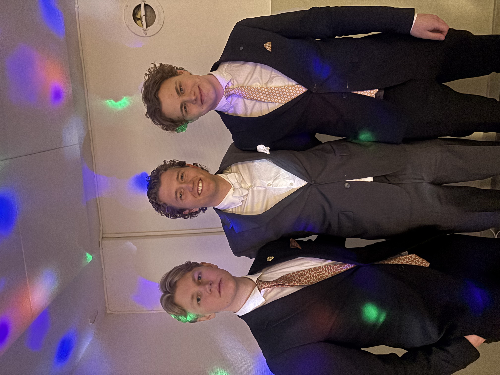

2026-02-08
Gursch Masters Januari 2026 avgjort
Efter en intensiv turnering med publikrekord och oerhörd spänning kan vi nu stolt presentera resultatet från Gursch Master Januari 2026.

Officiell Ranking: Top 4
- 1. John Gidefjord
- 2. EliGo (Nils Elias Olsson)
- 3. Anton Nordström
- 4. Nalle (Carl Greve)
Nedan följer de tre exklusiva intervjuerna från finalkvällen.
Intervju 1: Vinnarintervju